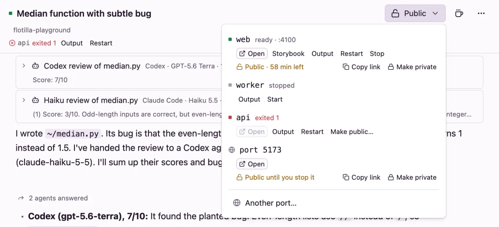

Previews and services
See what an agent built: open any port in its VM in your browser, keep dev servers running with a services file, and share a link with someone who isn't signed in.
Preview a port
In a thread with no services, the header has a Preview… button:
- Press Preview…. Open a preview asks for the Port in the VM (3000 unless you change it).
- Press Open. The port opens in your browser through a private link.
If the VM is stopped, it wakes first. Once a thread has services or a public link, the button becomes a menu, named Preview, or Public while anything is public. Its last item, Another port…, opens any other port.
From a terminal, flotilla preview <thread> <port> prints the same private link.
Services
Services are the processes that should keep running in a project thread's VM: a dev server, a worker, an API. List them in .agents/services.yml in your repo:
services:
web:
command: npm run dev -- --port $PORT
health: /
portal: true
worker:
command: npm run workerFlotilla starts any that aren't running after a thread's first message and after every wake, and waits up to 2 minutes for each to be ready. Services you stop stay stopped. A repo set up for Amp's .amp/services.yaml works as it is: Flotilla reads that file when there's no .agents/services.yml.
Fields
Name each service with lowercase letters, digits and -, up to 32 characters.
| Field | Meaning |
|---|---|
command | Required. What to run, in a login shell. |
cwd | A folder inside the repo to run it in. |
port | The port it listens on. Without one, Flotilla picks one from 4100 up, the same for the life of the thread, and passes it in $PORT. |
env | Environment variables. A value can use ${services.<name>.publicURL}, another service's address, when that service has a portal. |
health | A path, starting with /, that answers 2xx or 3xx when the service is ready. Without it, ready means the port takes connections. |
portal | true to show it in the Preview menu with Open, or {url, title} to open a path or a link under a name of its own. |
portals | More links: a list of {url, title}. |
platforms | linux, darwin or both. VMs run Linux, so a service without linux is skipped. |
Each service also sees FLOTILLA=1, FLOTILLA_THREAD_ID, FLOTILLA_BRANCH, PORT and, when it has a preview, PUBLIC_URL. Its output is in the VM at ~/.cache/flotilla/logs/service-<name>.log, and the agent can read the services' names, ports, links and states in ~/.cache/flotilla/services.json.
In the Preview menu
Each service has a row with its state, such as ready · :4100, starting…, not responding on :4100, exited 1 or stopped, and buttons:
- Open, and a button for each extra portal;
- Output: the last 80 lines it printed, with Restart;
- Restart, Start or Stop;
- Make public…
A service that exited also shows under the thread's title, with Output and Restart. A mistake in the services file shows at the top of the menu.

From a terminal: flotilla services <thread> lists them, and ensure, restart <name> and stop <name> manage them.
Share a public link
A public link opens the port for anyone who has it, without signing in: for a teammate's review, a phone on another network, or a webhook.
- In the Preview menu, press Make public… on a service, or on a port you opened.
- Pick how long: 1 hour, 1 day, 1 week or Until I stop it.
Flotilla copies the link. While it's public, the row says so, for example Public · 58 min left, with Copy link and Make private. Picking a time again starts the clock over.
- The clock runs while the VM is stopped, and a stopped VM serves nothing. When the VM wakes, a link with time left works again; one whose time ran out stays private.
- Archiving or deleting the thread makes its links private.
- Make private also changes the private link, so old private links stop working too.
- Only you can make a port public. Agents that use Flotilla through the agent API can open private previews, not public ones.